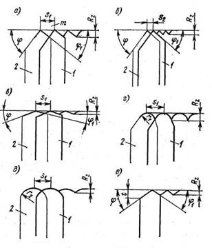
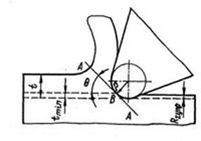

На шероховатость поверхности, обработанной резанием, оказывает влияние большое число факторов, связанных с условиями изготовления заготовки. В частности, высота и форма неровностей, а также характер расположения и направление обработочных рисок зависят от принятого вида и режима обработки; условий охлаждения и смазки инструмента; химического состава и микроструктуры обрабатываемого материала; конструкции, геометрии и стойкости режущего инструмента; типа и состояния используемого оборудования, вспомогательного инструмента и приспособлений.
Все многообразные факторы, обусловливающие шероховатость обработанной поверхности, можно объединить в три основные группы: причины, связанные с геометрией процесса резания; пластической и упругой деформациями обрабатываемого материала и возникновением вибраций режущего инструмента относительно обрабатываемой поверхности.
Процесс возникновения неровностей вследствие геометрических причин принято трактовать как копирование на обрабатываемой поверхности траектории движения и формы режущих лезвий. С геометрической точки зрения величина, форма и взаимное расположение неровностей (направление обработочных рисок) определяются формой и состоянием режущих лезвий и теми элементами режима резания, которые влияют на изменение траектории движения режущих лезвий относительно обрабатываемой поверхности. В различных условиях обработки пластические и упругие деформации обрабатываемого материала и вибрация искажают геометрически правильную форму неровностей, нарушают их закономерное распределение на поверхности и в значительной степени увеличивают их высоту. В ряде случаев пластические деформаций и вибрации вызывают появление продольной шероховатости, достигающей значительных размеров, и увеличение поперечной шероховатости.
Преобладающее влияние на формирование шероховатости поверхности оказывает (как правило) одна из трех указанных групп причин, которая и определяет характер и величину шероховатости. Однако в отдельных случаях шероховатость возникает в результате одновременного и почти равнозначного воздействия всех указанных причин и вследствие этого не имеет четко выраженных закономерностей.
За один оборот заготовки резец перемещается на величину подачи S1 (мм/об) и переходит из положения 2 в положение 1 (а). При этом на обработанной поверхности остается некоторая часть металла, не снятая резцом и образующая остаточный гребешок m. Совершенно очевидно, что величина и форма неровностей поверхности, состоящих из остаточных гребешков, определяются подачей S1 и формой режущего инструмента.
Например, при уменьшении подачи до значения S2 высота Rz неровностей снижается до Rz (б). Изменение углов φ и φ1 в плане оказывает влияние не только на высоту, но и на форму неровностей поверхности (в).
При использовании резцов с закругленной вершиной достаточно большого радиуса r1 форма неровностей становится соответственно также закругленной (г). При этом увеличение радиуса закругления вершины резца до r2 приводит к уменьшению высоты Rz шероховатости (д).
Формула расчета подачи учитывающая геометрические причины образования шероховатости:
So=0,14 x √(Ra x r),
где So - подача на оборот;
Ra - шероховатость, мкм;
r - радиус при вершине инструмента, мм.
При изготовлении режущего инструмента и при его затуплении на режущем лезвии инструмента образуются неровности и зазубрины, определенным образом увеличивающие шероховатость обрабатываемой поверхности. Влияние неровностей лезвия инструмента на шероховатость обработанной поверхности особенно существенно при тонком точении с малыми подачами, когда неровности лезвия соизмеримы с величиной Rz. В отдельных случаях полного копирования профиля зазубрин лезвия на обрабатываемую поверхность может и не произойти, так как пластически деформированный металл стружки и обрабатываемой поверхности иногда затекает в зазубрины режущей кромки, частично затормаживаясь в их плоскости, и делает их как бы более мелкими. В результате этого рост высоты шероховатости обработанной поверхности в некоторых случаях отстает от увеличения глубины зазубрин режущего лезвия. Однако и в этих случаях влияние зазубрин лезвия на шероховатость обрабатываемой поверхности может быть значительным.
По имеющимся практическим данным при затуплении режущего инструмента и появлении на нем зазубрин шероховатость обработанной поверхности возрастает при точении — на 50—60%, фрезеровании цилиндрическими фрезами — на 100—115 %, фрезеровании торцовыми фрезами — на 35—45%, сверлении — на 30—40% и развертывании — на 20—30%. Указанное увеличение шероховатости обрабатываемой поверхности при затуплении режущего инструмента связано не только с геометрическим влиянием зазубрин, возникающих на режущем лезвии, но и с возрастанием радиуса округления лезвия. Увеличение радиуса округления лезвия повышает степень пластической деформации металла поверхностного слоя, что приводит к росту шероховатости поверхности. Для устранения влияния зазубрин и притупления режущего лезвия рекомендуются тщательная (желательно алмазная) доводка инструментов и своевременная их переточка.
При обработке резанием пластичных материалов металл поверхностного слоя претерпевает пластическую деформацию, в результате которой значительно изменяются размеры и форма неровностей обработанной поверхности (обычно шероховатость при этом увеличивается).
При обработке хрупких металлов наблюдается вырывание отдельных частиц металла, что также ведет к увеличению высоты и изменению формы неровностей.
Скорость резания является одним из наиболее существенных факторов, влияющих на развитие пластических деформаций при точении.
Шероховатость обработанной поверхности в значительной степени связана с процессами образования стружки и в первую очередь с явлениями нароста. В зоне малых скоростей (v = 2÷5 м/мин), при которых нарост не образуется, размеры неровностей обработанной поверхности незначительны.
С увеличением скорости размеры неровностей поверхности возрастают, достигая при 20—40 м/мин своего наивысшего значения, многократно превосходящего расчетную величину.
Дальнейшее повышение скорости резания уменьшает нарост и понижает высоту шероховатости обработанной поверхности.
В зоне скоростей (v > 70 м/мин), при которых нарост не образуется, шероховатость поверхности оказывается минимальной. В этом случае дальнейшее увеличение скорости резания лишь незначительно снижает высоту шероховатости поверхности.
При высокой скорости резания глубина пластически деформированного поверхностного слоя незначительна и размеры шероховатости приближаются к расчетным.
В случае обработки хрупких материалов (например, чугуна) наряду со срезом отдельных частиц металла происходят их сдвиг и беспорядочное хрупкое откалывание от основной массы металла, увеличивающее шероховатость поверхности. Повышение скорости резания уменьшает откалывание частиц, и обрабатываемая поверхность становится более гладкой.
При чистовой обработке металлов, когда состояние и точность обработанной поверхности имеют решающее значение, совершенно естественно стремление вести обработку в зоне скоростей, при которых нароста на инструменты не образуется, а шероховатость поверхности получается наименьшей.
Подача — второй элемент режима резания, оказывающий большое влияние на шероховатость, что связано не только с указанными выше геометрическими причинами, но и в значительной степени обусловлено пластическими и упругими деформациями в поверхностном слое.
Резание металлов осуществляется инструментом, лезвие которого всегда имеет некоторый радиус округления ρ. При внедрении резца в обрабатываемый материал происходит отделение стружки по плоскости скалывания А—А. При этом часть металла, лежащего ниже точки В, не срезается, а подминается округленной частью резца, подвергаясь упругой и пластической деформации.
После прохождения резца несрезанный слой металла частично упруго восстанавливается, вызывая трение по задней поверхности резца. Разница степени упругого восстановления металла выступов и впадин неровностей обычно увеличивает высоту шероховатости.
Наименьшая толщина tmin срезаемого слоя (при превышении tmin происходит резание, а при снижении — только пластическое и упругое смятие металла округленной поверхностью лезвия инструмента) зависит от радиуса округления режущего лезвия, свойств обрабатываемого материала и скорости резания (при сокращении радиуса округления р и увеличении скорости резания tmin уменьшается).
Неровности поверхности в этом случае образуются не столько под влиянием геометрических причин, сколько в результате упругих и пластических деформаций, скорости резания и радиуса округления режущего лезвия резца. В связи с этим для обеспечения наименьшей шероховатости обработанной поверхности и высокой производительности чистовое точение углеродистых конструкционных сталей следует проводить при s = 0,05÷0,12 мм/об.
При точении цветных сплавов хорошо доведенными или алмазными резцами tmin уменьшается, поэтому для снижения высоты шероховатости может оказаться полезным уменьшение подачи до 0,01—0,02 мм/об.
Наблюдениями многочисленных исследователей установлено, что при обычном точении влияние глубины резания на шероховатость ничтожно и практически может не приниматься во внимание. При уменьшении глубины резания до 0,02 мм (вследствие наличия на режущей кромке резца округления) нормальное резание прекращается и резец, отжимаясь от изделия, начинает скользить по обрабатываемой поверхности, периодически врезаясь в нее и вырывая отдельные участки. Поэтому глубину резания при работе обычными резцами не следует брать слишком малой.
При глубине резания меньше подачи глубина оказывает геометрическое влияние на высоту шероховатости. В этом случае уменьшение глубины резания снижает высоту шероховатости.
Обрабатываемый материал и его структура оказывает существенное влияние на характер и высоту неровностей обработанной поверхности. Более вязкие и пластичные материалы (например, малоуглеродистая сталь), склонные к пластическим деформациям* дают при их обработке резанием грубые и шероховатые поверхности.
Применение смазочно-охлаждающих жидкостей, предотвращающих схватывание, уменьшающих трение и облегчающих процесс стружкообразования, способствует снижению высоты неровностей поверхности.
В процессе резания возникают вынужденные колебания системы станок—заготовка—инструмент, вызываемые действием внешних сил, и автоколебания системы, появление которых связано с периодическим упрочнением (наклепом) срезаемого слоя металла и изменением условий трения или резания. Вынужденные колебания системы обусловливаются дефектами отдельных механизмов станка (неточностью зубчатых передач, плохой балансировкой вращающихся частей, неудовлетворительной сшивкой ремня, чрезмерными зазорами в подшипниках и др.), являющимися причиной неравномерности его движения.
Вибрация лезвия режущего инструмента относительно обрабатываемой поверхности являются дополнительным источником увеличения шероховатости обработанной поверхности. Очевидно, что высота шероховатости поверхности будет тем значительнее, чем больше удвоенная амплитуда колебания лезвия инструмента относительно обрабатываемой поверхности.
Большое влияние на шероховатость обработанной поверхности оказывает состояние станка. Новые и хорошо отрегулированные станки, установленные на массивных фундаментах или на виброопорах, хорошо изолированные от вибраций другого оборудования, обеспечивает минимальную шероховатость.
Очень важным является создание достаточно высокой жесткости приспособлений для крепления заготовок и вспомогательных инструментов для установки режущего инструмента. Например, в случае обработки заготовок на револьверном станке из прутка с закреплением последнего в трехкулачковом самоцентрирующем патроне высота шероховатости обработанной поверхности на 30—40 % выше, чем при зажатии прутка в нормальном цанговом патроне, имеющем большую поверхность соприкосновения с заготовкой и создающем поэтому большую ее устойчивость.
Особенно сказываются вибрации технологической системы на шероховатость обработанной поверхности при тонком растачивании на алмазно-расточных станках. Неравномерность припуска, снимаемого при тонком растачивании, обусловливающая колебание сил резания, также может являться причиной вибрации технологической системы, увеличивающих шероховатость обработанной поверхности.
Формирование шероховатости поверхности при различных видах механической обработки (фрезеровании, сверлении, шлифовании, доводке и др.) подчиняется в общем тем же закономерностям, что и при точении. Характер этих закономерностей видоизменяется в зависимости от изменения соотношения влияния геометрических причин, пластических деформаций и вибраций, связанных с особенностями отдельных видов механической обработки.